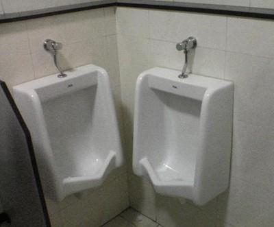
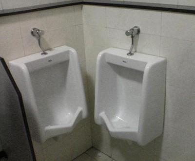

DESIGN THINKING
... w zespole scrumowym
Krzysztof Kwiatosz
- Co ja tu robię?
- Po co mi DT?
- Jak powstają potwory?
- Design Thinking w praktyce
- SAP Hybris
- web developer
- scrum master
- web-designer
- UI/UX ekspert


Scrum & Design Thinking
- Iteracje - szybki feedback
- Fail fast (and cheap)
- Użytkownik w centrum
- Produkt końcowy jest niewiadomą
PO CO MI TO?
 

Jak powstają potwory?

"Dokumentacja"
- Szablony
- Szkielety
- Sz..pecifikacje
ROZBIEŻNOŚCI
NIEAKTUALNE

1.ZROZUMIEĆ UŻYTKOWNIKA

DEFINIOWANIE PROBLEMU
?
Cel : Wypracować pomysł rozwiązania problemu (UX)
Jak : szkocowanie pomysłów (na ilość)
Kiedy : przed planowaniem sprintu
Kto : cały zespół
~60 min


DON'T FALL IN

WITH YOUR PROTOTYPE
PROTOTYP i TEST
Czas na Test
- US -> wyzwanie dla testującego
- min 5 testujących (80/20)
- BRAK PODPOWIEDZI!
Na pozegnanie